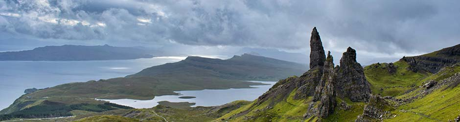
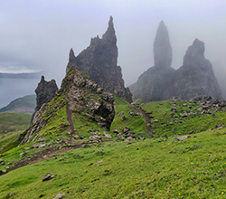
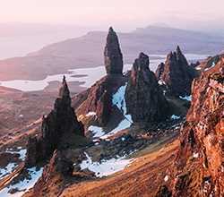

Old Man of Storr
Few places on the Isle of Skye conjure more magic than the Old Man of Storr. This pinnacle of stone in the hills of The Storr, can be seen from miles away, almost as soon as you leave Portree or as soon as you approach it. It's visible, it's stunning and it's one of the best walking routes in Scotland. Or, at least, one of the most mythical.
Legend of the Old Man of Storr
Scotland wouldn't be Scotland without its legends. And the Old Man of Storr has his too. The legend of the Old Man of Storr tells that many years ago, before time existed, a giant lived on the Trotternish Peninsula. When he lay down to die, the thumb of his, the “Old Man” was partially under the ground. Another of the Old Man of Storr legends deals with two giants. In this case, it is said that while fleeing from their attackers, two giants (an older man and his wife) turned to look back, turning to stone as they did so.
On the other hand, some say that the mythological origins of the Old Man of Storr date back to the days when goblins inhabited the Isle of Skye. A local, named O'Sheen, saved the life of a leprechaun and never asked for anything in return for the "favor". But one day that the leprechaun was gone, O'Sheen died of a broken heart when his wife died. The goblin, hearing about him, was so upset that he chiseled two rocks (one larger than the other) in honor of his friend and his wife.

And there are still more legends of the Old Man of Storr, if you are into such things. The last one deals with fairies, those creatures that in Scottish mythology are more capricious and evil than ethereal and playful. Those who know her say that a man who climbed the hill every day with his wife found that one day they had both grown old and his wife could no longer accompany him to the top. The fairies, who had watched them every evening, offered the old man the opportunity to always be able to take his wife wherever she went. The man accepted the offer but the fairies had tricked him and turned them both into two rock pillars, so that they would always be together.

The Storr is a rocky hill on the Trotternish Peninsula, on the Isle of Skye, in Scotland. It has an elevation of 719 meters and the stone pinnacle known as The Old Man of Storr is one of its most popular formations. The Old Man stands 50 meters tall and takes its name from its resemblance to the profile of an old man, they say. The first person to climb it was the mountaineer Don Whillans, who summited it in 1955. Since then it has been very popular among climbing enthusiasts.
Although the pinnacle of the Old Man is the star of The Storr and the place that everyone wants to visit, if you have time I advise you to take it easy and explore the rest of the beautiful places in the area. Since you take the beating of going up to the top, take advantage.